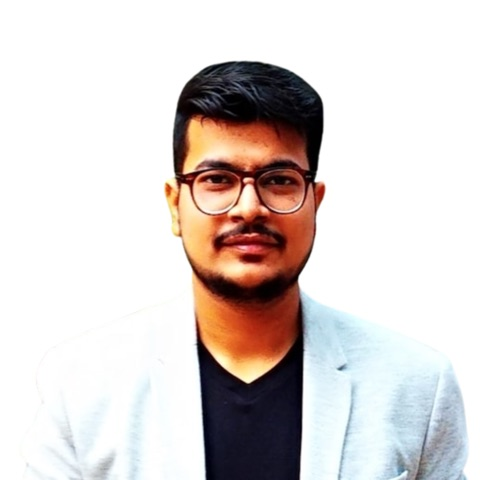

10+ years engineering production systems, 5+ years specialised in AI/ML · GenAI · MLOps. LLM invoice pipeline saving $100K+/month, voice AI agents auto-resolving ~65% of inbound calls, 7 RAG chatbots and 5 forecasting pipelines each shipped from a single codebase — plus open-source AI tools with 100+ GitHub stars.

Multi-agent LangGraph platform with adaptive mastery tracking. Groq-powered LLaMA 3.3-70B Orchestrator routes to 5 graphs: SCOUT (Academic + Market + Practical + Factual → Consensus → Synthesizer → Reviewer → Mermaid Skill Graph), CONTENT (Boost / Builder / Sprint), LEARNING PLAN (mastery-gated node progression, ≥80% mastered), LESSON (structured delivery + DuckDuckGo + job-scraper research), EXERCISE (coding challenges + live unit-test grader via streamlit-ace). Full LangSmith tracing. GitHub MCP.
Full-stack automated content factory for 3 niches (Data Science · Life · Poetry). 67 Python scripts driven by launchd schedulers and a 9-page Streamlit operator dashboard: RSS/trend research → Notion ideation → Claude AI generation → Remotion video production → Buffer-scheduled publishing across 7 platforms. Closed-loop analytics pipeline.
12 portal scrapers (LinkedIn · Greenhouse · Lever · Indeed · Naukri · Wellfound · Instahyre · ArbeitNow · Hirist · Remotive · WeWorkRemotely · Hacker News). Gemini Flash fit scoring. Dynamic resume tailoring per JD. Playwright one-click Easy Apply. Streamlit dashboard.
Open-source AI job agent — pip install autopilot-jobhunt. Scans 130+ company careers pages nightly, scores every role 0–100 against your resume with an LLM, pushes top matches to Telegram, and drafts a tailored resume + cover letter on demand in 60s. Claude Code MCP mode lets you run the whole pipeline in natural language.
YAML-driven CV tailoring engine. NLP keyword scoring ranks projects/skills by JD match. 12 role-profile classifiers (LLM/GenAI/Agent/FDE/DS/MLOps/…) each with distinct title, summary opener, and cover letter. python-docx builder → DOCX/PDF. Batch mode from Excel job tracker. 30+ pytest assertions.
Snowflake · Certified
Snowflake · Certified
Anthropic · Certified
Anthropic · Certified
Anthropic · Certified
Anthropic · Certified
Amazon · In Progress · Q3 2026
Otto-von-Guericke University, Magdeburg 🇩🇪
LNMIIT, Jaipur 🇮🇳
tarungupta.medium@gmail.com
+91 7838 868 072
linkedin.com/in/tarun-gupta-in
github.com/tarunlnmiit
tarun-gupta.medium.com
@breathofdatascience